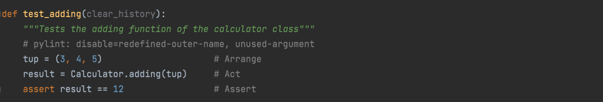
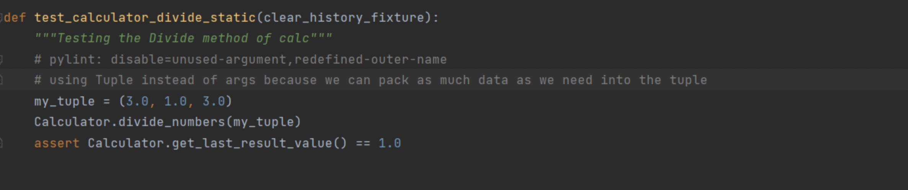
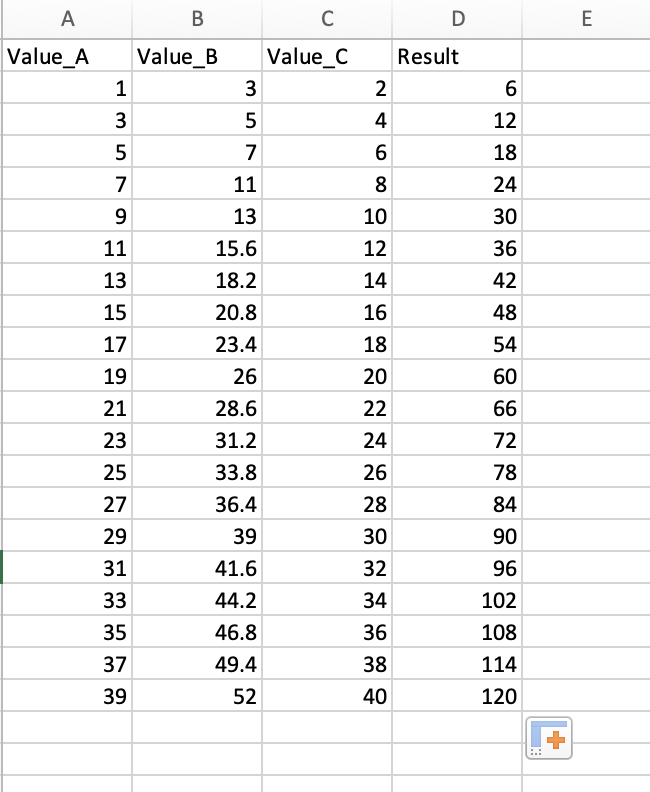
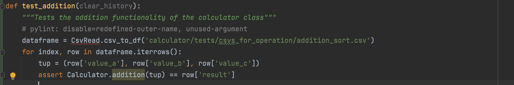

AAA Testing Tutorial
Why is testing important?
Understanding AAA Testing
AAA testing is an acronym for Arrange, Act, Assert. These are the steps to develop an effective
unit test for your code.
Arrange - involves the construction of the test case. This is where you set up the situation and
parameters needed to test a function or method.
Act - is executing the target behavior of the test case. Utilizing the arrangement from the previous
step, Act involves performing the action that is being tested.
Assert - is the act of confirming expected outcomes. This step takes the result from the Act step
and tests it against the expected outcome
Why AAA is Important?!
Arrange-Act-Assert is powerful because it is simple. It forces tests to focus on independent, individual behaviors. It separates setup actions from the main actions. It requires test to make verifications and not merely run through motions. Notice how the pattern is not Arrange-Act-Assert-Act-Assert – subsequent actions and assertions belong in separate tests. Arrange-Act-Assert is a great pattern to follow for writing good functional tests.
How AAA Testing is implemented in Calculator??
The addition function adds a tuple of numbers and stores it to the history. This is the facade of the calculator so the actual calculation, the object creation, and storing the value in the history is hidden behind the scenes. But regardless, this function is supposed to return the sum of the values. Below shown code is the AAA style unit test for the addition function.
The first line where the tuple is created will be the Arrange step where data is set up to perform the test. The second step is Act where the main action is performed. The addition function is called and the result variable is set to the result of the method. In the last step, the Assertion is made where we know the expected result, and we are making sure that the method returns the expected result. In this case, 3 + 4 + 5 = 12.
The division function divides a tuple of numbers and stores in to the history. The first line where the tuple is created will be the Arrange step where data is set up to perform the test. The second step is Act where the main action is performed. The division function is called and the result variable is set to the result of the method. In the last step, the Assertion is made where we know the expected result and making sure that the method returns the expected result.
Testing Using external Data
An important aspect to testing would be making sure that the code is able to handle large amounts of data In this example, we use pandas to read csv files containing data that will test each of the operations.
An important aspect to testing your code is making sure that it is suitable to handle copious amounts of data when it scales up. In this example, we use pandas to supply csv files containing data that will test each of the operations. To demonstrate how to accomplish this, I will be using the pandas python package, and demonstrate how to test with CSV's using the "test_subtracting method".
We need to set up our csv files. Below, The CSV file used to create 4 columns containing three different values, and a result column containing the addition of the values. Once we have the CSV, we can put it into our project folder.

Once, the CSV is prepared. we can start writing the data using the pandas dataframe. Here, the class "CsvRead" which reads the csv files and takes filepath as an input. The pandas modules has a method called "read_csv" which makes it easy.

Below, we're testing this method and making sure that it prints out the data frame we expected. For this, we want to assure that we can access the values within the dataframe, so we print out the 'value_A' item from each row.